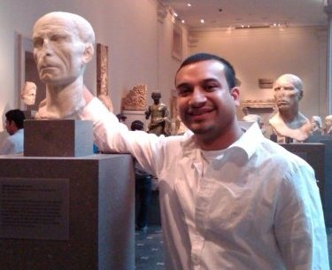

 Hello! Welcome to my Portfolio Page! Here you can learn more about my interests and short term goals. Currently, I work in the healthcare field but soon I will be transitioning in to the Web development world! My passion for learning computer programming stems from childhood as I used to play around with an ancient programming tool called qBasic. This lasting interest and the passion I get from building something from scratch gives me the best feelings of joy, purpose and mind stimulation!
On this page you will see the links to my upcoming Portfolio projects and my contact information. The portfolio will consists of all my projects and skills. Here you will find different type of projects I have worked on indepently and with group members at the great Rutgers BootCamp!
For fun activites, I love to spend time with my wife, read new articles and learn to code! Coding has become a great interest for me and with enough experience and practice, I want to work for a company in Web Development and be part of challenging freelance projects!
In terms of sports, I love snowboarding during the winter season, preferably snowboard in Vermont where the snow is soft! During spring and summer months I love to go swimming and play basketball. Usually, I hit the gym during my lunch break at work! Work and learning to code can get overwhelming you know!!